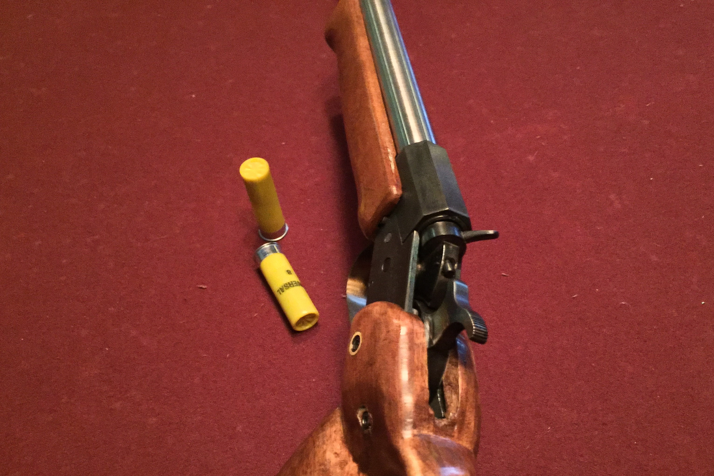

The Rolling Block
Summer 2017
Rolling block is a multi-caliber platform modeled on the Remington Rolling Block Rifle
Video of firing and Slow-motion (youtube)

The rolling block was a famous early single-shot rifle made by Remington. Renouned for its simplicity and clever action, I decided to make one for myself. It was designed to be highly customizable, with easily changed barrels and a removable buttstock so it could be configured as a pistol or a rifle or a shotgun! The action itself is common for any centerfire cartridge you want as long as the action can handle the bolt thrust. This means high-power rifle cartridges are out, but intermediate cartridges, low-pressure rifle cases, and shotshells are alright. In the end, I made barrels in 20ga. and .45-70 Govt.
Closeup of the breech, showing breech face and ejector
Due to my lax documentation while building this gun, combined with its simplicity, there is little to really discuss about this gun. It's construction is very simple, just two plates that link at the front with a receiver ring that holds a threaded barrel. The breech block is hinged so it can cover the chamber or pivot out of the way. When the hammer is forward, the front of the hammer cams under the breechblock and locks it closed, sealing the gun for firing. When the hammer is cocked, the breechblock is freed, allowing the gun to be loaded or a case to be removed. There is a half-cock position. The trigger just presses against a sear bar that locks the hammer. Very simple. The trigger is very light, about 1lb. The gun did originally have a pretty ugly cherry thumbhole stock that I carved just because I wanted to try carving a thumbhole stock. That was a terrible idea stylistically, and also I'm not a woodworker. I eventually restocked the gun with a pistol grip and detatchable buttstock which is still ugly, but better. The detatchable stock is held on by two machine screws and stabilized by a dowel rod that connects it to the pistol grip. So enjoy some pictures:
Pistol configuration, with a 10" .45-70 barrel. This barrel was made as a test of the rifling setup, and it is a pretty poor barrel. This is just a fun absolute unit of a handgun.
My cut-rifling setup. This was the only gun I've made with cut-rifling, and it kinda sucks. I used a twisted piece of keystock attached to an adjustable cutter.
The gun, with shotgun barrel and old stock.